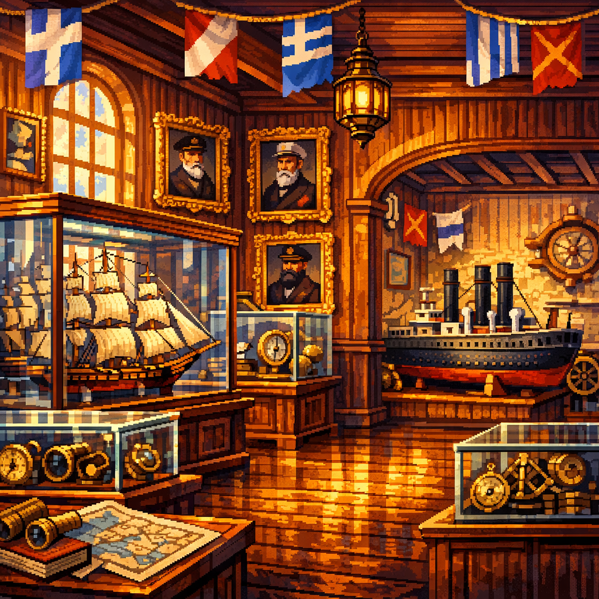
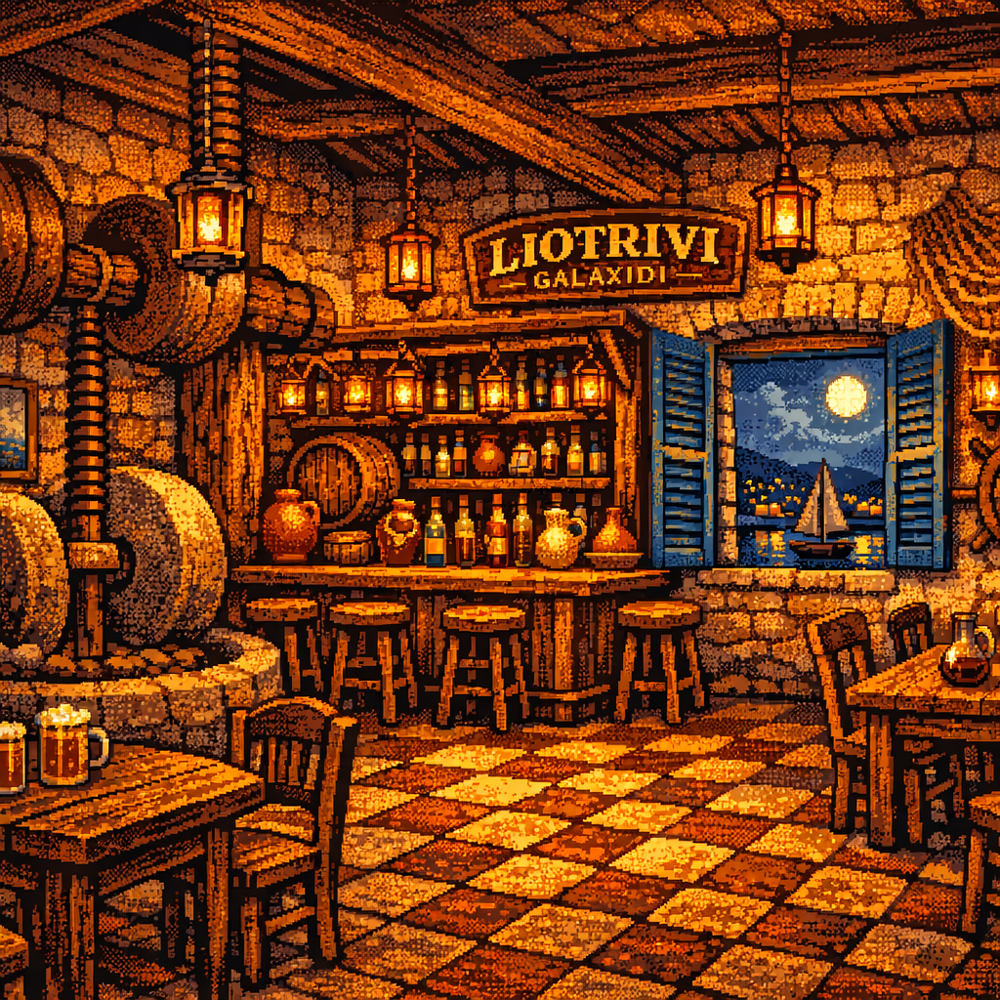
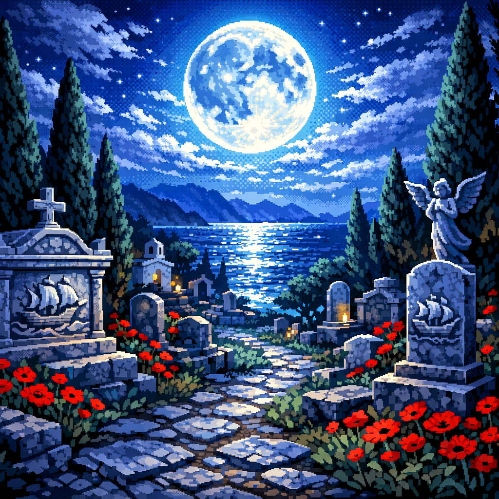
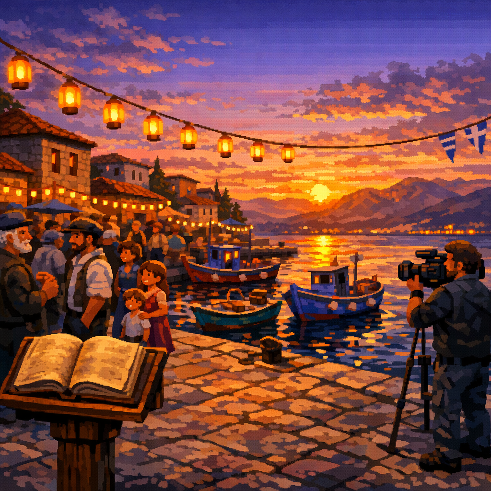
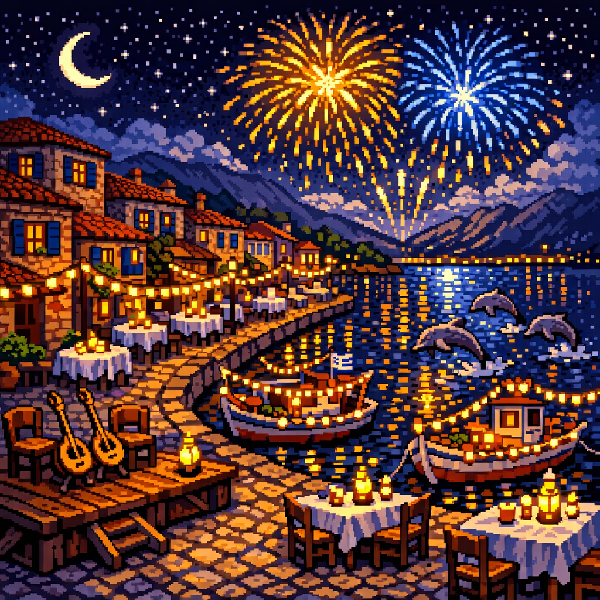

Το Μυστήριο του Γαλαξειδίου
The Mystery of Galaxidi
12 σκηνές. Ένας θησαυρός. Μια πράσινη πέτρα. Ένα φάντασμα που θυμάται. Μια νέα εποχή.
12 scenes. One treasure. One green stone. One ghost who remembers. One new era.
↓ Scroll to begin ↓
Σκηνή 1 / Scene 1
ΑΦΙΞΗ
"Arrival"
Εικόνα / Visual

The crescent harbor at golden hour. Stone houses climbing the hill, blue shutters, bougainvillea. Oversized bollards holding tiny fishing boats. A cat watches from a doorstep. The family walks in from the left.
The family arrives at Galaxidi by car. Late afternoon, the light turning everything to honey. The town stretches along its crescent harbor — beautiful, quiet, full of ghosts it doesn't know about yet.
ΝΤΕΜΗΣ
Φτάσαμε. Πρέπει να βρούμε το σπίτι του παππού.
ΑΙΑΣ
Ποιου παππού;
ΝΤΕΜΗΣ
Του παππού μου. Κανένας δεν έχει μπει εδώ χρόνια. Κληρονομιά.
ΚΛΕΙΩ
Θα έχει φαντάσματα;
ΝΤΕΜΗΣ
...Όχι, Κλειώ. Θα έχει σκόνη.
They walk through the harbor. A fisherman nods. A cat follows Clio — it will follow her for the entire game. They find the house on a narrow lane climbing from the port. Old stone, blue door, bougainvillea choking the balcony. The key barely turns.
The door opens. Dust and memory pour out.
Gameplay
- Tutorial: learn to click, walk, look at objects
- Explore harbor (2-3 interactive objects — bollards, boats, cat)
- Walk to grandfather's house → exit to Scene 2
- Cat follows Clio (running gag throughout game)
Music
Warm acoustic guitar — arrival-at-galaxidi-scene-1-1.mp3. The main theme, simple and solo. Cicadas in the mix. Mediterranean afternoon warmth. Continues unchanged through the terrace sub-scene (same track, no restart).
· · ·
Σκηνή 2 / Scene 2
ΤΟ ΣΠΙΤΙ ΤΟΥ ΠΑΠΠΟΥ
"The Grandfather's House"
Music — Crossfade
On entry: Acoustic guitar crossfades out (1.5s) → mysterious piano crossfades in (1.5s). On exit back to exterior/terrace: piano fades out → acoustic guitar returns. The transition is seamless — the mood shifts from warm arrival to intimate mystery.
Εικόνα / Visual

Dark interior, shutters closed. As each shutter opens, golden light floods in to reveal: model ships on shelves, nautical instruments on walls, a faded photograph of Captain Visvikis. A captain's house frozen in 1903.
Ntemis opens shutters one by one. Light floods in. It's a captain's house — model ships, brass instruments, charts on walls. A faded photograph: a man in captain's dress, standing proud on a ship deck.
ΚΛΕΙΩ
Ποιος είναι αυτός;
ΝΤΕΜΗΣ
Ο Καπετάν Βισβίκης. Ο προπάππους μου. Ταξίδεψε σε όλο τον κόσμο με ιστιοφόρο.
Ajax finds a locked desk drawer. Clio finds the key — in a copper pot on the mantle, exactly where a seven-year-old would look. Inside the drawer: a letter. Old paper, careful handwriting, sealed with wax.
Σε όποιον βρει αυτό το γράμμα — εγώ, Καπετάν Λουκάς Βισβίκης, αφήνω πίσω μου τον θησαυρό μιας ζωής στη θάλασσα. Δεν τον δίνω σε κανέναν. Τον δίνω μόνο σε αυτόν που θα βρει την πράσινη πέτρα.
Την πέτρα τη βρήκα στα ταξίδια μου στην Ανατολή. Την έκρυψα εκεί που η γη μιλάει — εκεί που τα βράχια γίνονται σπήλαιο κι ο ήχος δεν φεύγει ποτέ.
Βρες την πέτρα. Φέρε τη σε μένα. Θα σου δείξω τον δρόμο.
— Καπ. Λ. Βισβίκης, 1887
ΑΙΑΣ
"Φέρε τη σε μένα"... Είναι νεκρός εδώ και εκατό χρόνια. Πώς θα του τη φέρουμε;
ΚΛΕΙΩ
Στο νεκροταφείο, βλάκα.
ΝΤΕΜΗΣ
...Κλειώ.
ΚΛΕΙΩ
Τι; Λογικό είναι.
Ajax looks at the letter again: "εκεί που η γη μιλάει — εκεί που τα βράχια γίνονται σπήλαιο." A cave. They need to find a cave. But first — someone in town might know.
+ Γράμμα Βισβίκη
+ Φωτογραφία Καπετάνιου
Gameplay
- Open shutters one by one (light reveals room gradually)
- Examine photo, model ships, instruments
- Find locked drawer → find key in copper pot → open drawer
- Read letter → quest begins
- Letter + photo go into inventory
Music
Mysterious piano — the-grandfather-s-house-1.mp3. Soft, dust-in-sunbeams. Swells when the letter is read — the adventure theme enters for the first time.
· · ·
Σκηνή 3 / Scene 3
Η ΠΑΡΕΑ
"The Friends"
Εικόνα / Visual

The waterfront promenade at golden hour. A green bench facing the harbor. Beside it, the old anchor monument — massive, rusted iron, chained to the stone quay. An ornate double lamp post. Behind them, a classic Galaxidi captain's house rises: warm stone walls, blue shutters, iron balconies, an arched blue door. Across the water: the town, the boats, the mountains. On the bench: two men with instruments — Akis with a wooden flute (φλογέρα), Stathis with a guitar. They play a slow, beautiful melody.
The harbor at golden hour. The anchor monument. A blue bench overlooking the quay. Akis and Stathis sit playing music — φλογέρα and guitar. A slow sailors' melody. The harbor listens. A fisherman stops pulling nets to listen.
ΝΤΕΜΗΣ
Πόσα χρόνια, ρε παιδιά;
ΑΚΗΣ
Αρκετά. Αλλά το Γαλαξίδι δε σ' αφήνει να ξεχάσεις.
They embrace — hugs, laughter, years compressed into smiles. Ajax and Clio hang back, watching.
ΚΛΕΙΩ
Τι τραγούδι παίζατε;
ΚΛΕΙΩ
Λυπημένο αλλά ωραίο.
ΣΤΑΘΗΣ
Ήταν το τραγούδι των ναυτικών. Το τραγουδούσαν όταν έφευγαν.
Ntemis shows the letter. Akis goes quiet. He knows the name Visvikis well — everyone in Galaxidi does, but Akis has read the old records.
ΑΚΗΣ
Ταξίδεψε στη Σμύρνη, στην Αλεξάνδρεια, στη Βηρυτό. Λέγανε ότι γύρισε με κάτι πράσινο... κάτι που δεν έδειξε σε κανέναν.
On the clue "where the earth speaks":
ΑΚΗΣ
Ο Κάρκαρος. Το σπήλαιο πίσω από την πλατεία Μάμα. Μπαίνεις μέσα και η φωνή σου γυρίζει πίσω τρεις φορές.
ΑΚΗΣ
Αν θέλεις να καταλάβεις τον Βισβίκη, πρέπει να δεις πρώτα τι έχασε το Γαλαξίδι. Εκεί ζει η ιστορία.
ΣΤΑΘΗΣ
(picking up the melody again)
Και μίλα στον Άθο στο Λιοτρίβι. Ξέρει κάθε οικογένεια, κάθε μυστικό. Διάβασε και τη διαθήκη.
Clio draws the two musicians on the bench.
ΚΛΕΙΩ
Σαν να παίζουν για τη θάλασσα.
ΑΚΗΣ
Γιατί αυτό κάνουμε, μικρή.
Gameplay
- Follow the music along the waterfront → find Akis and Stathis
- Reunion dialog — warm, natural, friends catching up
- Show letter to Akis — he recognizes the significance
- Akis points to museum, Stathis points to Liotrivi (Athos)
- Examine anchor monument, bench, lamp post, captain's house
- Exit to Museum
Music
LIVE MUSIC — φλογέρα (wooden flute) and acoustic guitar. A slow, achingly beautiful Mediterranean sailors' melody. The only scene where music comes from characters on screen. This melody becomes a motif — it returns in the epilogue. Warm, nostalgic, bittersweet.
· · ·
Σκηνή 4 / Scene 4
ΤΟ ΝΑΥΤΙΚΟ ΜΟΥΣΕΙΟ
"The Maritime Museum"
Εικόνα / Visual

Warm wood, naval flags, model ships in glass cases. Captain portraits on the walls — proud men with beards and dress coats. A telescope, brass instruments, maps. And in one corner, almost apologetic: a single model steamship. Smaller. Less polished. The room's afterthought.
The Nautical Museum of Galaxidi. Small but dense with history. The Curator — ~55, thin, reading glasses always crooked, passion that could fill the harbor — lights up when they mention Visvikis. He leads them to his portrait — the same face as the photograph in the house, but younger.
ΕΠΙΜΕΛΗΤΗΣ
Τριακόσια καράβια. Έξι χιλιάδες κάτοικοι. Το Γαλαξίδι ήταν η ναυτική πρωτεύουσα της Ελλάδας.
Ajax photographs inscriptions with his phone. Googles "Galaxidi ships" — gets autocorrected to "Galaxy ships."
He walks them to the steamship corner — a small, iron, ugly model next to the graceful schooners:
ΕΠΙΜΕΛΗΤΗΣ
...ήρθε ο ατμός. Κι αυτοί που ήξεραν τα πάντα για τα πανιά, αρνήθηκαν να μάθουν κάτι καινούριο.
ΑΙΑΣ
(quietly)
Δηλαδή... ήταν οι καλύτεροι, κι αυτό τους έκανε χειρότερους;
ΕΠΙΜΕΛΗΤΗΣ
Ακριβώς, μικρέ μου. Ακριβώς αυτό.
Clio finds the αλληλασφάλεια display — a copy of the 1860 mutual insurance ledger. 104 captains signed.
ΑΙΑΣ
Εκατόν τέσσερις υπογραφές. Σαν ομάδα.
ΕΠΙΜΕΛΗΤΗΣ
(smiling)
Η πιο σημαντική ομάδα που είχε ποτέ αυτή η πόλη.
Gameplay
- Explore museum — model ships, portraits, instruments
- Curator dialog tree: the golden age, the 300 ships, the decline
- The steamship corner — pivotal narrative turn
- Ajax's key question + Ajax uses phone (comic + useful)
- Clio finds the αλληλασφάλεια display
- Exit to Liotrivi
Music
Reflective piano and strings. Grand for the golden age. Minor key at steamship corner — the sound of something ending.
· · ·
Σκηνή 5 / Scene 5
ΛΙΟΤΡΙΒΙ
"The Old Olive Press"
Εικόνα / Visual

Stone walls, amber lanterns, the old olive press preserved as decor. Wooden bar, checkered floor, bottles glowing. Through the blue-shuttered window: the moonlit harbor with a sail. Athos behind the bar — 50, brown hair, sharp features, reading glasses at his collar. A lawyer's precision in a barman's setting.
Evening. The Liotrivi — half bar, half living history. Athos — 50, lawyer and owner. Knows every old family's history. He sets down his glass when they mention Visvikis.
ΑΘΟΣ
Ξέρεις ότι διάβασα τη διαθήκη του; Επαγγελματική διαστροφή — ψάχνω παλιά έγγραφα. Τα άφησε όλα «στο Γαλαξίδι.» Όχι σε πρόσωπο. Στην πόλη.
ΑΙΑΣ
Εμείς ξέρουμε! «Εκεί που η γη μιλάει.»
ΑΘΟΣ
(nodding)
Ο Κάρκαρος. Το σπήλαιο πίσω από την πλατεία Μάμα.
He pours tsipouro for Ntemis, lemonade for the kids. Leans in:
ΑΘΟΣ
Μη με ρωτήσεις αν αξίζεις. Πήγαινε και δείξ' το.
ΑΙΑΣ
Αλλά στο μουσείο είπαν ότι οι καπεταναίοι ήταν σπουδαίοι ΚΑΙ πεισματάρηδες.
ΑΘΟΣ
Ήταν. Τα δύο πάνε μαζί πιο συχνά απ' ό,τι νομίζεις.
Athos, quiet now:
ΑΘΟΣ
Ποιο είναι το ατμόπλοιο σήμερα; Ποιο είναι αυτό που έρχεται, και πρέπει να το πιάσουμε αυτή τη φορά;
The question hangs in the air. No one answers. Ajax remembers it for the rest of the game.
ΚΛΕΙΩ
(drawing Athos in her notebook)
Μοιάζεις με δικαστή.
ΑΘΟΣ
Χειρότερα. Δικηγόρος.
Gameplay
- Talk to Athos — confirms cave, reveals will details, delivers the challenge
- The "ατμόπλοιο σήμερα" question — lodges in Ajax's mind until Scene 12
- Examine olive press, bottles, photos on walls
- Clio draws Athos (notebook moment)
- Exit to Windmill or Plateia Mama → Cave
Music
Rebetiko warmth. Bouzouki and guitar, amber and smoky. Quieter when Athos speaks about Visvikis's will. Silence on the "ατμόπλοιο σήμερα" line.
· · ·
Σκηνή 6 / Scene 6
Ο ΜΥΛΟΣ
"The Windmill"
Εικόνα / Visual
The old stone windmill on the hill above town. Round tower, conical roof, wooden blades. A cobblestone terrace with a telescope pointing toward the islands. A panoramic view: the gulf stretching west, the mountains catching sunset light, Galaxidi's red roofs and harbor below. Cypress trees frame the scene.
On the way to the cave, they pass the old windmill above Plateia Mama. Giannis owns it — bought it years ago, restores it slowly, stone by stone. He's a quiet man who sees things from above, literally and figuratively.
ΝΤΕΜΗΣ
Γιάννη, ψάχνουμε τον Κάρκαρο. Το σπήλαιο πίσω από την πλατεία.
ΓΙΑΝΝΗΣ
(not looking up from his whittling)
Ξέρω πού είναι. Βλέπω την είσοδο από εδώ πάνω. Θέλετε να σας δείξω;
He leads them to the edge of his terrace. Points down. From up here, you can see the whole layout: the plateia, the overgrown bushes, the dark opening behind them.
ΓΙΑΝΝΗΣ
Εκεί κάτω. Πίσω από τα κιβώτια. Η είσοδος είναι μικρή αλλά μέσα ανοίγει. Πάρτε αυτό.
He gives them an old lantern. Heavy, brass, functional — the kind fishermen used.
ΑΙΑΣ
Τέλειο! Ευχαριστούμε!
ΓΙΑΝΝΗΣ
Ξέρεις γιατί αγόρασα τον μύλο; Γιατί από εδώ βλέπεις τα πάντα.
He shows them the view — the harbor, the cave entrance below, the church, the islands. The whole quest laid out from above.
ΑΙΑΣ
(looking through telescope)
Βλέπω το νησάκι! Εκεί θα πάμε;
ΝΤΕΜΗΣ
Αν βρούμε αυτό που ψάχνουμε στο σπήλαιο.
ΚΛΕΙΩ
Σαν τον Βισβίκη. Αυτός ήθελε να μείνει κάτι.
ΓΙΑΝΝΗΣ
(smiles but says nothing)
+ Φανάρι
Gameplay
- Explore windmill — panoramic view of town, gulf, mountains
- Talk to Giannis — he shows the cave entrance from above
- Receive lantern (inventory item — used in cave)
- Examine windmill interior, old millstone, Giannis's carvings
- Exit down the hill to Plateia Mama → Cave
Music
Wind and height. A solo acoustic guitar, open and spacious. The sound of seeing far. Peaceful, unhurried — Giannis's tempo. A man who watches and waits.
· · ·
Σκηνή 7 / Scene 7
ΤΟ ΣΠΗΛΑΙΟ
"The Cave of Karkaros"
Εικόνα / Visual

Dark cave interior. Lantern light casting long shadows. Dripping water. Ancient markings scratched into stone walls — ship names, captain initials, dates. Deep in the chamber, a crack in the wall glows faintly green.
Plateia Mama. Behind old crates and overgrown bushes: the cave entrance. Inside: dripping water, echo, darkness. Ntemis lights the lantern. Walls covered in old marks — ship names, initials, dates scratched into stone over centuries.
ΑΙΑΣ
Μπαμπά, κοίτα — ο Βισβίκης ήταν εδώ. «Λ.Β. 1887.»
Ajax spots something higher up — scratched into the rock above head height. He climbs. Reads aloud:
Πρόταση για ατμόπλοιο. Απορρίφθηκε, 9 προς 3.
"Motion to invest in steamship. Rejected, 9 to 3."
Silence.
Ntemis translates for both kids: a vote. Someone wanted to buy a steamship. Nine captains said no. Three said yes. Visvikis was one of the three.
ΑΙΑΣ
(quiet now)
Τρεις ήξεραν. Και κανείς δεν τους άκουσε.
He's thinking of Athos's question. What's the steamship of today?
They search for the jade. Ntemis at ground level. Ajax checks crevices at his height. Nothing. Clio looks UP — the angle only a seven-year-old would try. She sees it. Wedged into a crack above eye level:
THE GREEN STONE. Smooth, dark green jade, roughly fist-sized. Warm to the touch.
ΝΤΕΜΗΣ
Νεφρίτης. Jade. Από την Ανατολή, σίγουρα.
ΑΙΑΣ
Αξίζει κάτι;
ΝΤΕΜΗΣ
Αξίζει ό,τι ο Βισβίκης ήθελε να δείξει μ' αυτό. Τώρα πρέπει... να του το πάμε.
ΚΛΕΙΩ
Σας το είπα.
ΑΙΑΣ
...Στο νεκροταφείο.
ΚΛΕΙΩ
Σας. Το. Είπα.
+ Πράσινη Πέτρα (Jade)
Gameplay
- Enter cave with lantern (light → dark transition)
- Examine wall markings — find "Λ.Β. 1887"
- Ajax climbs to discover "9 to 3" vote inscription — his big moment
- Search wrong spots first — Clio finds stone by looking UP
- Green stone goes into inventory
Music
Underground wonder. Echoing, dripping, mysterious but warm — not scary. Silence when the vote inscription is read. Resonant crystalline tone when the stone is found. The jade has its own sound.
· · ·
Σκηνή 8 / Scene 8
ΤΟ ΝΕΚΡΟΤΑΦΕΙΟ
"The Captain's Rest"
Εικόνα / Visual

Dusk. The old cemetery above town. Marble headstones with carved ships. Cypress trees. Wild thyme. The sea visible beyond. Visvikis's grave: marble captain's headstone, carved schooner (the Ελπίδα), 1841–1903. Epitaph: «Η θάλασσα θυμάται.»
Every headstone is a biography — ships carved in marble. Clio reads names aloud. Ajax photographs them. They find Visvikis's grave.
Ntemis places the green stone on the headstone. Silence.
The air changes. Not cold — different. Clio grabs Ntemis's hand. Ajax steps back. He reaches for his phone, then puts it away.
The ghost of Captain Visvikis appears.
Not frightening — weathered, proud, tired. Captain's coat, white beard. He smiles: the smile of a man who has waited 120 years.
He doesn't speak. He looks at each of them: at Ntemis (his blood, carrying on), at Ajax (the future he fought for), at Clio (innocence that deserves the truth).
He points down the hill, toward the harbor, toward the church of Agios Nikolaos. Traces a cross in the air — but also a compass rose.
ΚΛΕΙΩ
(ψιθυριστά)
Ο χάρτης. Θέλει να βρούμε τον χάρτη. Είναι στον Άγιο Νικόλαο.
The ghost nods. Clio waves at the ghost. The ghost waves back. Then fades. The green stone glows once, then goes dark.
ΑΙΑΣ
...Μόλις μας έδωσε οδηγίες ένα φάντασμα.
ΝΤΕΜΗΣ
Μόλις μας έδωσε οδηγίες ο προπάππους μου.
Clio draws the ghost in her notebook: "Κουρασμένος αλλά χαρούμενος. Σαν κάποιος που τελικά μπορεί να κοιμηθεί."
Gameplay
- Explore graveyard — read 3-4 captain headstones (micro-biographies)
- Find Visvikis's grave with epitaph «Η θάλασσα θυμάται»
- Use green stone on headstone → ghost sequence
- Ghost looks at each family member, points to church
- Clio waves → ghost waves back → fades
Music
THE GHOST'S THEME. Solo Greek lyra. Lonely and melancholy → warms as the ghost smiles → quiet as he fades → resolves into peace.
· · ·
Σκηνή 9 / Scene 9
ΑΓΙΟΣ ΝΙΚΟΛΑΟΣ
"The Map in the Church"
Εικόνα / Visual

Church interior at candlelight. Icons gleaming gold. The famous wooden iconostasis. Silence and beeswax. The Papas — ~65, warm, slightly mischievous.
ΝΤΕΜΗΣ
Πάτερ, ψάχνουμε κάτι που άφησε ο Καπετάν Βισβίκης.
ΠΑΠΑΣ
Βισβίκης... Ήταν ο μεγαλύτερος ευεργέτης αυτής της εκκλησίας. Πλήρωσε για τη στέγη, για τα εικονίσματα, ακόμα και για το τέμπλο. Κάθε ταξίδι ξεκινούσε με προσευχή εδώ, κάθε ασφαλής επιστροφή τελείωνε με κερί ευχαριστίας.
Clio lights a candle.
ΠΑΠΑΣ
Για ποιον;
ΚΛΕΙΩ
Για τους καπεταναίους. Και τα πλοία τους.
ΠΑΠΑΣ
(moved)
Αυτό, παιδί μου, είναι ακριβώς αυτό που έκαναν κι εκείνοι.
They search. Ntemis examines the icons. Ajax tries to climb the iconostasis.
Everyone looks up, looks around. Clio sits quietly, looking at the floor.
A floor tile near the altar has Visvikis's mark — the same "Λ.Β." from the cave. It's loose. Underneath: a rolled nautical chart, sealed in oilcloth. Protected for over a century.
They unroll it. Hand-drawn. The Corinthian Gulf. Galaxidi. And marked with an X — the tiny island of Άγιος Γεώργιος, just offshore.
Το βράχι κοιτάει νοτιοδυτικά. Κάτω από τον σταυρό, πέντε βήματα. Σκάψε.
"The rock faces southwest. Below the cross, five steps. Dig."
— margin note, Visvikis's hand
ΑΙΑΣ
Ξέρω αυτό το νησάκι! Φαίνεται από το λιμάνι! Μπορούμε να πάμε με βάρκα!
ΠΑΠΑΣ
(crossing himself)
Αν βρείτε κάτι... θυμηθείτε ποιος το σώζει. Αυτή η πόλη χρειάζεται θαύματα.
+ Ναυτικός Χάρτης
Gameplay
- Talk to Papas — he lets you search
- Examine icons, iconostasis, windows (wrong spots)
- Ajax tries climbing (comic beat, Papas stops him)
- Clio spots the floor tile with "Λ.Β."
- Open tile → nautical chart found
- Map goes into inventory → exit to harbor/boat
Music
Sacred warmth. Deep choral tones with warm reverb. Swells when the map is discovered — the adventure theme returns, now richer, with strings.
· · ·
Σκηνή 10 / Scene 10
ΤΟ ΚΑΡΑΒΙ
"The Crossing"
Εικόνα / Visual

Dawn. The boat Ελπίδα on the gulf. Galaxidi receding behind them, glowing in first light. Mountains rising. The tiny island of Agios Georgios ahead — rocky, a small white chapel, wild herbs. Chrysostomos at the helm, effortless.
Chrysostomos stands by his boat — the Ελπίδα, Visvikis's own ship, passed down through generations, maintained with devotion. He knows whose ship he sails.
ΧΡΥΣΟΣΤΟΜΟΣ
Ο πατέρας σου μου είπε ότι κάποια μέρα θα ερχόσουν. Δεν πίστευα ότι θα ζούσα να το δω.
The crossing is short but magical. Galaxidi seen from the water — the town in its landscape, mountains behind, the gulf stretching. Chrysostomos tells Visvikis's story:
ΧΡΥΣΟΣΤΟΜΟΣ
Ήταν ο τελευταίος ρομαντικός. Ταξίδεψε μέχρι την Ανατολή κι επέστρεψε. Έλεγε ότι βρήκε κάτι που θα σώσει το Γαλαξίδι. Κανείς δεν τον πίστεψε. Πέθανε μόνος. Αλλά δεν πέθανε χωρίς σχέδιο.
His deepest wisdom, delivered to the water more than to anyone:
ΧΡΥΣΟΣΤΟΜΟΣ
Εγώ δεν κατηγορώ τους παλιούς καπεταναίους. Ήξεραν τον άνεμο σαν τη γυναίκα τους. Αλλά η θάλασσα δεν σε ρωτάει τι αγαπάς. Η θάλασσα αλλάζει κι εσύ αλλάζεις μαζί της, αλλιώς πνίγεσαι.
They land on the rocky islet. A tiny chapel of Agios Georgios. Wild thyme and oregano. Seagulls wheeling. The rock that faces southwest. The old stone cross. Five steps.
Ajax digs. Clio counts the steps. Ntemis watches.
The shovel hits wood.
Gameplay
- Board boat (scenic transition)
- Click landmarks during crossing for Chrysostomos's stories
- Arrive at island — find southwest rock → cross → count 5 steps
- Ajax digs → transition to treasure
Music
THE MOST BEAUTIFUL MUSIC IN THE GAME. Acoustic guitar and lyra. Dawn on the water. A melody that aches with hope. The Ελπίδα's name is the sound.
· · ·
Σκηνή 11 / Scene 11
Ο ΘΗΣΑΥΡΟΣ
"The Treasure"
Εικόνα / Visual
Dawn on the rocky islet of Agios Georgios. An old iron-bound sea chest half unearthed from the rocky ground, a shovel beside it. The tiny white chapel with its blue dome. Wild thyme and purple wildflowers between the rocks. Seagulls wheeling. Across the turquoise water: Galaxidi, small and beautiful, waiting. Mountains catching the first sunrise light.
A sea chest. Old, iron-bound, the lock rusted but the wood sound. Visvikis built things to last. They open it.
Inside:
Gold coins — Ottoman, Venetian, a few ancient Greek. A lifetime of savings from a lifetime at sea.
A jade necklace — matching the green stone. From the same journey east.
The original αλληλασφάλεια ledger — the mutual insurance pact of 1860, with the signatures of 104 captains. Visvikis kept it. The real one.
And a letter:
Αυτός ο θησαυρός δεν είναι δικός μου. Είναι του Γαλαξειδίου.
Ταξίδεψα στην Ανατολή και γύρισα πλούσιος. Αλλά ο αληθινός πλούτος δεν είναι ο χρυσός. Είναι αυτό που χτίσαμε μαζί — η αλληλεγγύη. Κανείς δεν ταξιδεύει μόνος.
Το Γαλαξίδι σβήνει. Τα καράβια φεύγουν. Ο κόσμος αλλάζει κι εμείς δεν αλλάζουμε μαζί του. Αλλά αυτός ο θησαυρός μπορεί να ξαναχτίσει αυτό που χάσαμε — αν αυτός που τον βρει αγαπάει αυτή την πόλη αρκετά.
Κράτα την αλληλεγγύη. Άλλαξε το πλοίο.
— Καπ. Λ. Βισβίκης
Silence on the island. Just the waves and the gulls.
ΚΛΕΙΩ
Μπαμπά, τι θα κάνουμε;
ΝΤΕΜΗΣ
Αυτό που ήθελε ο Βισβίκης. Θα τα δώσουμε στο Γαλαξίδι.
ΑΙΑΣ
(holding the ledger, reading the old signatures)
Εκατό τέσσερις. Εκατό τέσσερις άνθρωποι υπέγραψαν. Κανένας δεν ταξιδεύει μόνος.
ΚΛΕΙΩ
Μπαμπά; Αν ο Βισβίκης μπορούσε να δει τώρα, θα χαμογελούσε;
Ntemis looks at the harbor across the water. Galaxidi in the morning light. Small. Beautiful. Waiting.
ΝΤΕΜΗΣ
Ναι, μικρή μου. Νομίζω ότι τώρα, μπορεί επιτέλους να κοιμηθεί.
The return: Chrysostomos takes them back. Sunset. Clio falls asleep on Ntemis's lap, the jade necklace in her hand. Ajax watches Galaxidi grow closer from the bow, quiet and thoughtful. Chrysostomos hums a melody — the ghost's theme — without knowing why he knows it.
Music
Building from silence. Each item revealed adds an instrument — coins (percussion), necklace (lyra), ledger (strings), letter (full theme). When Clio speaks: a new melody. Gentle. Hopeful. The sound of the future. On the return: the ghost's theme hummed over water, resolving into peace.
· · ·
Σκηνή 12 / Scene 12
Η ΝΕΑ ΕΠΟΧΗ
"The New Era"
Εικόνα / Visual

Weeks later. The harbor of Galaxidi at sunset. The whole town gathered — fishermen, taverna owners, old women in black, children running between chairs. Benches and chairs form a natural amphitheater facing the water. A projection screen flickers against the old harbor wall showing documentary footage of a sailing ship. Akis stands beside a camera on a tripod, his φλογέρα tucked in his belt. The treasure chest sits open on a table, gold coins catching the last light. The αλληλασφάλεια ledger open beside it. Musicians play on the right — guitar and φλογέρα. String lights hang between lamp posts. Clio wears the jade necklace.
Weeks have passed since they found the treasure. Ntemis hasn't been idle. He's called a gathering — the whole town, on the harbor where it all began. The chest sits open on a table for everyone to see. The ledger beside it. The jade necklace around Clio's neck, catching the light.
ΝΤΕΜΗΣ
Ο Βισβίκης δεν μας άφησε θησαυρό. Μας άφησε ερώτηση. Τι κάνεις όταν ο κόσμος αλλάζει κι εσύ αγαπάς αυτό που ήταν;
The crowd is quiet. Chrysostomos in the front row. The Curator wiping his glasses. Athos standing at the edge, arms crossed. Papas in his robes, watching. Giannis, as always, slightly apart.
ΝΤΕΜΗΣ
Ο Άκης ξέρει να κρατάει ιστορίες ζωντανές. Το έκανε στην Άμφισσα. Στα ορεινά χωριά. Στους ελαιώνες. Θα το κάνει και για το Γαλαξίδι.
Akis steps forward. He's not just a musician — he's a documentarist. His camera has captured the stories of dying towns and living traditions across Greece. Amfissa, the mountain villages, the olive groves. Thirty years of filming places on the edge. Now: Galaxidi.
ΑΚΗΣ
Τριάντα χρόνια κινηματογραφώ τόπους που σβήνουν. Το Γαλαξίδι δεν θα σβήσει. Αυτή τη φορά δεν γράφω ελεγείο. Γράφω αρχή.
He plays a clip on the projection screen. Test footage he's already shot. The harbor at dawn. Chrysostomos on the Ελπίδα, squinting at the horizon. The mouth of Karkaros cave. Old hands mending nets in golden light. The carved ships on marble gravestones. The town gasps — at its own beauty, seen through fresh eyes.
ΑΘΟΣ
(standing, the lawyer's precision in his voice)
Ο χρυσός θα χρηματοδοτήσει τρία πράγματα. Το ντοκιμαντέρ. Την αποκατάσταση του μουσείου. Και κάτι καινούριο.
Ntemis takes over. He speaks carefully, the way he always does — but with fire underneath. The question Athos asked at the Liotrivi — "Ποιο είναι το ατμόπλοιο σήμερα;" — finally gets its answer.
ΝΤΕΜΗΣ
Οι καπεταναίοι αρνήθηκαν τον ατμό. Δεν θα κάνουμε το ίδιο λάθος. Το ατμόπλοιο σήμερα λέγεται τεχνητή νοημοσύνη. Αλλάζει τα πάντα — τη δουλειά, τις πόλεις, τον τρόπο ζωής.
ΑΙΑΣ
(from the crowd, echoing Athos's old question)
Και τι γίνεται με μέρη σαν εδώ;
ΝΤΕΜΗΣ
Αυτό είναι το μυστικό. Σε έναν κόσμο που τρέχει, τα μέρη που αναπνέουν γίνονται ο νέος παράδεισος. Το Γαλαξίδι δεν χρειάζεται να γίνει σαν την Αθήνα. Χρειάζεται να γίνει περισσότερο Γαλαξίδι.
A murmur through the crowd. Chrysostomos nods from his chair. The Curator's eyes are wet.
ΝΤΕΜΗΣ
Η αλληλασφάλεια ήταν εκατόν τέσσερις υπογραφές. Σήμερα ζητάω τις δικές σας. Όχι για καράβια. Για κάτι μεγαλύτερο — να κάνουμε αυτό τον τόπο ζωντανό ξανά. Με τον δικό μας τρόπο.
Silence.
Then the old woman in black — the same one who nodded at them on arrival in Scene 1 — stands. She walks to the ledger. She signs.
One by one, the Galaxidians follow. Chrysostomos, steady hand. The Curator, reading glasses steaming. Papas, blessing the pen before he writes. Giannis, silent as ever. Athos, with a lawyer's clean signature. Stathis, still strumming softly. Akis films it all.
ΑΙΑΣ
Μπαμπά, πόσες υπογραφές;
ΝΤΕΜΗΣ
(counting)
Εκατόν τρεις. Λείπει μία.
Ajax takes the pen. Signs. Looks up.
The same number as the original pact. 1860 and now.
Stathis picks up his guitar. Akis puts down his camera, pulls out his φλογέρα. The sailors' melody from Scene 3 — but now the whole harbor hums along. Not a lament anymore. A beginning.
ΚΛΕΙΩ
(drawing in her notebook: the harbor, the crowd, the screen, the signatures. She writes one word underneath)
ΕΛΠΙΔΑ.
Gameplay
- Walk through the gathered crowd — talk to familiar NPCs (each has a unique reaction line)
- Approach the podium → Ntemis speech sequence begins
- Watch Akis's documentary footage (cinematic moment on the projection screen)
- Athos presents the three-part plan
- Ntemis delivers the vision — AGI as today's steamship
- Interactive signing sequence — watch townspeople approach the ledger one by one
- Ajax signs as the 104th — the number locks into place
- Clio notebook moment — writes ΕΛΠΙΔΑ
- Sailors' melody returns, the whole harbor joins in
Music
THE REBIRTH. Ntemis's speech is unscored — just the crowd, the sea, the wind. Raw and real. Documentary clip has its own underscore (Akis's footage theme — warm, cinematic). When the old woman signs first: a single guitar note. Each signature adds a layer — percussion, strings, lyra, bouzouki. By the time Ajax signs the 104th: the sailors' melody returns in its RICHEST arrangement — φλογέρα, guitar, lyra, strings, the whole harbor humming. The theme of Galaxidi reborn. The most joyful sound in the game.
· · ·
Επίλογος / Epilogue

Ο Καπετάν Βισβίκης ταξίδεψε στην Ανατολή, γύρισε πλούσιος, κι έκρυψε τον θησαυρό του για κάποιον που θα αγαπούσε το Γαλαξίδι αρκετά για να τον βρει.
Εκατόν είκοσι χρόνια αργότερα, τρεις ταξιδιώτες τον βρήκαν.
Οι παλιοί καπεταναίοι αρνήθηκαν τον ατμό. Οι νέοι δεν θα κάνουν το ίδιο λάθος.
Σε έναν κόσμο που αλλάζει πιο γρήγορα απ' ό,τι μπορεί κανείς να φανταστεί, τα μέρη που θυμούνται ποιοι είναι γίνονται ο νέος παράδεισος.
Εκατόν τέσσερις υπογραφές. Τότε και τώρα.
Η θάλασσα θυμάται. Κι εμείς τώρα, αλλάζουμε μαζί της.
ΤΟ ΜΥΣΤΗΡΙΟ ΤΟΥ ΓΑΛΑΞΕΙΔΙΟΥ
Κράτα την αλληλεγγύη. Άλλαξε το πλοίο.
Το Γαλαξίδι είναι αληθινό. Η ιστορία του είναι αληθινή.
Αυτό το παιχνίδι είναι δώρο στο Γαλαξίδι και στον κόσμο.
Κεφάλαιο 2 — Σύντομα...